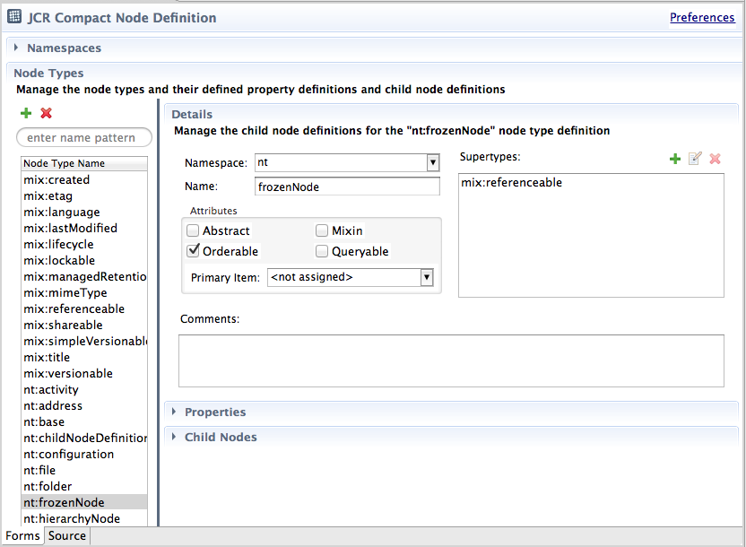

The ModeShape Tools Java Content Repository (JCR) Compact Node Type Definition (CND) Editor is a 2-page editor for
*.cnd files. The first page is a form-based view of the CND file; while the second page is a readonly, source view.
Here is what the CND Editor looks like:

The CND Editor's form page consists of the following sections:
- a header section, which displays error messages and a link to open the CND preference page,
- a namespaces section, which displays and allows editing of the namespace mappings defined in the CND, and
- a node types section, which displays and allows editing of the node type definitions defined in the CND.
Header Section
The header section contains a hyperlink that, when activated, opens the CND notation preference page. Also, if the CND being edited has validation errors, the header section will have another hyperlink that identifies the total number of validation errors found. Clicking the errors hyperlink opens a dialog that lists the specific validation errors and provides a way to export those validation messages to a file.
Here is what the header section will look like when the CND has one validation error:
Namespaces Section
The namespaces section is a collapseable area used to create and maintain the namespace mappings declared in the CND file. A namespace mapping consists of a unique prefix, a unique URI, and an optional comment. The namespace section looks like this:

Namespace mappings are editing using the following dialog:
Node Types Section
The node types section is used to create and maintain the node type definitions declared in the CND file. The node types section consists of, along the left-side, a table containing all the declared node type definitions, and a node type name filter box which allows the user to limit the number of node types being displayed. The node type table can be used to delete a selected node type. The node type table, with the name filter on top, looks like this:
The right-side of the node types section consists of a details area, as well as, collapseable areas for property and child node definitions. When a node type definition is selected, it's corresponding information is used to populate the details, properties, and child nodes areas. The details area is used to edit a node type's namespace, name, supertypes, attributes, and an optional comment. The details area looks like this:
A node type definition can contain zero or more property definitions. When the properties area is expanded, the following table will show the declared property definitions for the selected node type definition:
The properties table can be used to delete a selected property definition and can optionally show inherited properties. A property definition can be created or edited using the property definition editor shown here:
A node type definition can contain zero or more child node definitions. When the child nodes area is expanded, the following table will show the declared child node definitions for the selected node type definition:
The child nodes table can be used to delete a selected child node definition and can optionally show inherited child nodes. A child node definition can be created or edited using the child node definition editor shown here:
When a CND Editor is saved, the CND notation type preference determines the specific format to save the CND file. Choose between long, compressed, or compact depending on your needs. The preview area on the preference page gives you an idea just how the CND file will be saved. Here is what the ModeShape CND Notation preference page looks like: